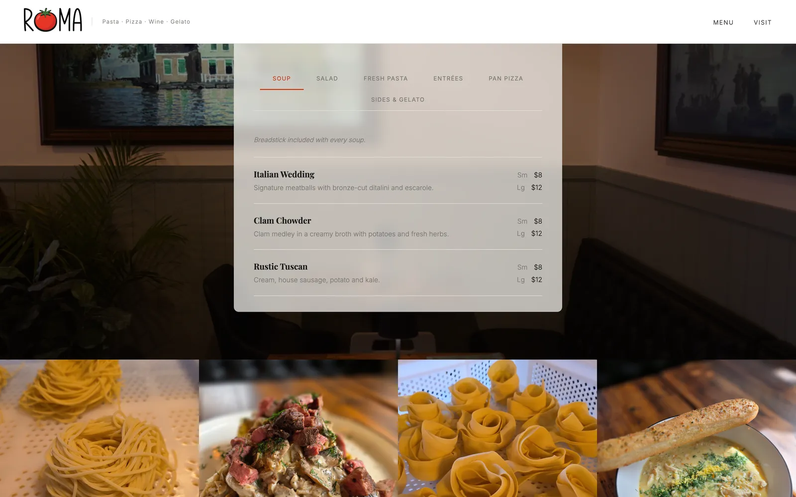

Roma
Counter-style Italian · Corn Hill, Rochester
Design, copy, and build
Roma is a small Italian restaurant in Rochester’s Corn Hill neighborhood. The pasta is made in house from Italian-imported flour, the gelato changes weekly, and you order at the counter. It is open three evenings a week.
Like the restaurant, the site is simple. The headline names whatever is on the plate beside it, Detroit pizza one moment and homemade gelato the next, and the second line changes with it; when the Peroni comes around it reads: come thirsty. The hours and address sit right under the first button. There is no reservation system, because Roma does not take reservations.

The full menu is on the page itself, not hidden in a PDF, set in the same type as the rest of the site over photographs of the dining room and the pasta. You can go from the headline to the price of the Italian Wedding soup in two scrolls.